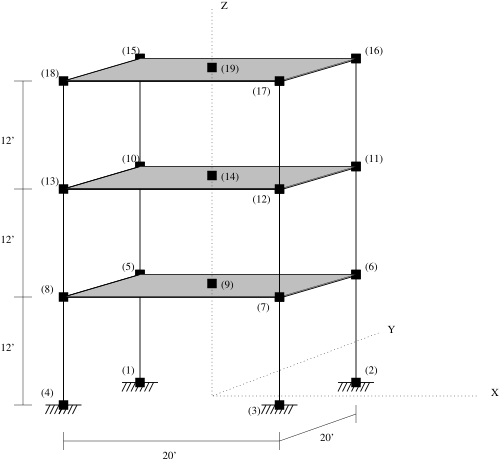

Example 5.1
This example is of a three-dimensional reinforced concrete rigid frame, as shown in figure example5{reference-type=“ref” reference=“example5”}, subjected to bi-directional earthquake ground motion.
Or for Python:
In both cases, the following ground motion records are required:
3. tabasFN.txt
4. tabasFP.txt
A model of the rigid frame shown in the figure below is created. The model consists of three stories and one bay in each direction. Rigid diaphragm multi-point constraints are used to enforce the rigid in-plane stiffness assumption for the floors. Gravity loads are applied to the structure and the 1978 Tabas acceleration records are the uniform earthquake excitations.
Nonlinear beam column elements are used for all members in the structure. The beam sections are elastic while the column sections are discretized by fibers of concrete and steel. Elastic beam column elements may have been used for the beam members; but, it is useful to see that section models other than fiber sections may be used in the nonlinear beam column element.

A solution Algorithm of type Newton is used for the nonlinear problem. The solution algorithm uses a ConvergenceTest which tests convergence on the norm of the energy increment vector. The integrator for this analysis will be of type Newmark with a $\gamma$ of 0.25 and a $\beta$ of 0.5. Due to the presence of the multi-point constraints, a Transformation constraint handler is used. The equations are formed using a sparse storage scheme which will perform pivoting during the equation solving, so the System is SparseGeneral. As SparseGeneral will perform it’s own internal numbering of the equations, a Plain numberer is used which simply assigns equation numbers to the degrees-of-freedom.
Once all the components of an analysis are defined, the Analysis object itself is created. For this problem a Transient Analysis object is used. 2000 steps are performed with a time step of 0.01.
The nodal displacements at nodes 9, 14, and 19 (the retained nodes for the rigid diaphragms) will be stored in the file node51.out for post-processing.
The results consist of the file node.out, which contains a line for every time step. Each line contains the time and the horizontal and vertical displacements at the diaphragm retained nodes (9, 14 and 19) i.e. time Dx9 Dy9 Dx14 Dy14 Dx19 Dy19. The horizontal displacement time history of the first floor diaphragm node 9 is shown in figure [example4disp{reference-type=“ref” reference=“example4disp”}. Notice the increase in period after about 10 seconds of earthquake excitation, when the large pulse in the ground motion propogates through the structure. The displacement profile over the three stories shows a soft-story mechanism has formed in the first floor columns. The numerical solution converges even though the drift is $\approx 20 %$. The inclusion of P-Delta effects shows structural collapse under such large drifts.